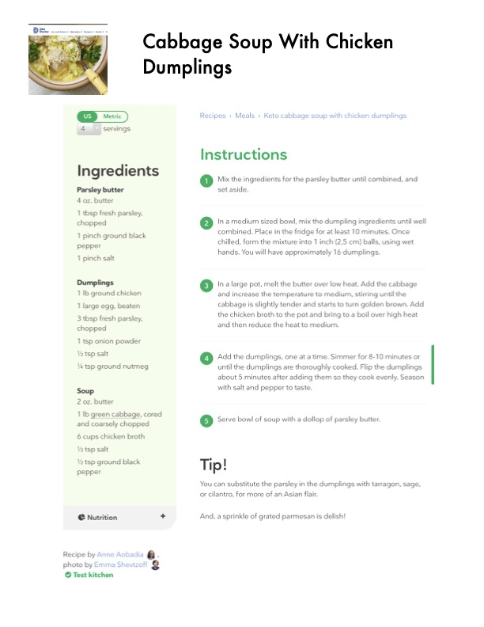

Cabbage Soup With Chicken Dumplings

Original cookbook page 87
Keto cabbage soup with chicken dumplings featuring tender cabbage and flavorful chicken dumplings in a rich broth, served with parsley butter.
Ingredients
- 4 oz. butter (for parsley butter)
- 1 tbsp fresh parsley, chopped (for parsley butter)
- 1 pinch ground black pepper (for parsley butter)
- 1 pinch salt (for parsley butter)
- 1 lb ground chicken (for dumplings)
- 1 large egg, beaten (for dumplings)
- 3 tbsp fresh parsley, chopped (for dumplings)
- 1 tsp onion powder (for dumplings)
- ½ tsp salt (for dumplings)
- ¼ tsp ground nutmeg (for dumplings)
- 2 oz. butter (for soup)
- 1 lb green cabbage, cored and coarsely chopped
- 6 cups chicken broth
- ½ tsp salt (for soup)
- ½ tsp ground black pepper (for soup)
Instructions
- Mix the ingredients for the parsley butter until combined, and set aside.
- In a medium sized bowl, mix the dumpling ingredients until well combined. Place in the fridge for at least 10 minutes. Once chilled, form the mixture into 1 inch (2.5 cm) balls, using wet hands. You will have approximately 16 dumplings.
- In a large pot, melt the butter over low heat. Add the cabbage and increase the temperature to medium, stirring until the cabbage is slightly tender and starts to turn golden brown. Add the chicken broth to the pot and bring to a boil over high heat and then reduce the heat to medium.
- Add the dumplings, one at a time. Simmer for 8-10 minutes or until the dumplings are thoroughly cooked. Flip the dumplings about 5 minutes after adding them so they cook evenly. Season with salt and pepper to taste.
- Serve bowl of soup with a dollop of parsley butter.
Recipe #87 from collection